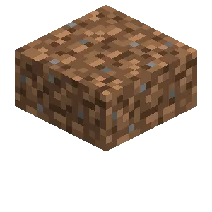

About
The dirt slab, coarse dirt slab, and rooted dirt slab are decorative slab variants of the various blocks. These slabs can be combined into a single block, similarly to vanilla slabs.
Config
Set Enable Dirt Slabs to Yes/true (default) to activate these blocks, or No/false to disable them. All dirt and grass slabs are controlled by this setting.
Making Path Slabs
Any variant of dirt slab can be made into a dirt path slab by using a shovel on it.
Placing Plants
Only the top and double variants support plants normally. However, if the Slabbed mod is installed the bottom variant will support plants as well.
Breaking
Breaking a single slab drops one slab, while a double slab drops two, similarly to vanilla slabs.
Double Slabs
Only two dirt slabs of the same type can form a double slab unless a different mod changes this behavior, similarly to normal slabs.
Crafting Recipe

Craft six dirt slabs by placing three of any dirt type in a single row.
Dirt Slabs


| Renewable | Yes (Crafting) |
| Stackable | Yes (64) |
| Waterloggable | Yes |
| Tool | Any tool, but the shovel is the quickest! |
| Blast Resistance | 0.5 |
| Hardness | 0.5 |
| Luminous | No |
| Transparent | Double: No Single: Partial |
| Catches fire from lava | No |